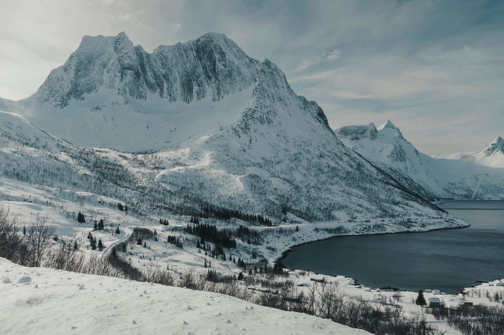

Use cases for wheel loader [Industrial machine intelligence]A retrofitted Volvo L180H at Hadeland. Production work, with no one in the cab.
Wheel loaders moving fertilizer inside one of Europe's largest ammonia facilities. Our first larger customer.
Riksvei 13 in Vestland closes for avalanche risk. The loader clears it during the closure, run from a control room.
A wheel loader working inside an active tunnel, with the operator 90 km away and the link running on a public network.
Sørli is a Hamar Pukk og Grus quarry. The test ran with Veidekke Infrastruktur and Telia, on a Volvo L-series with our kit fitted.